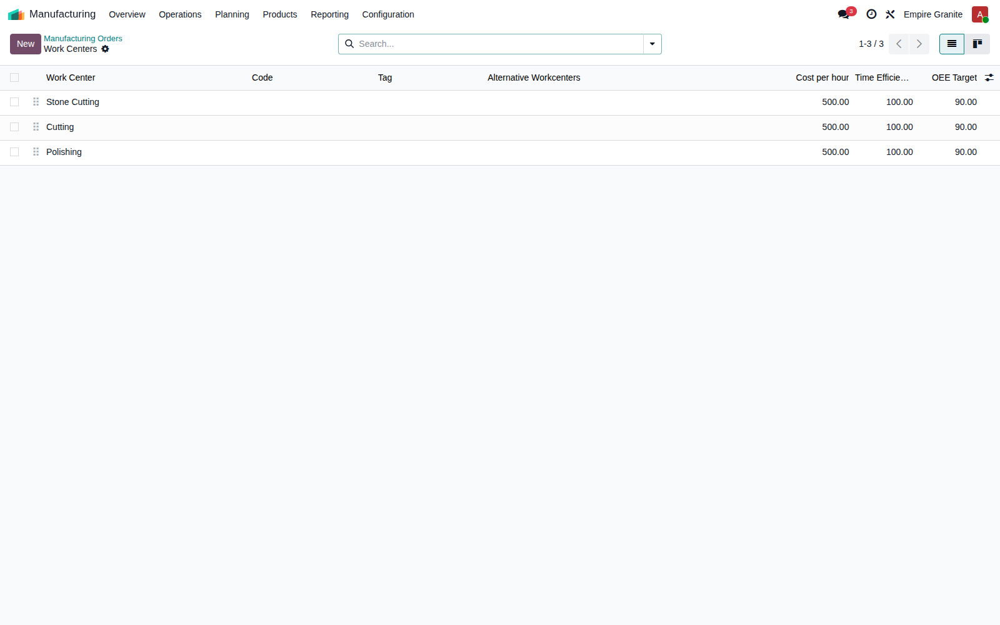
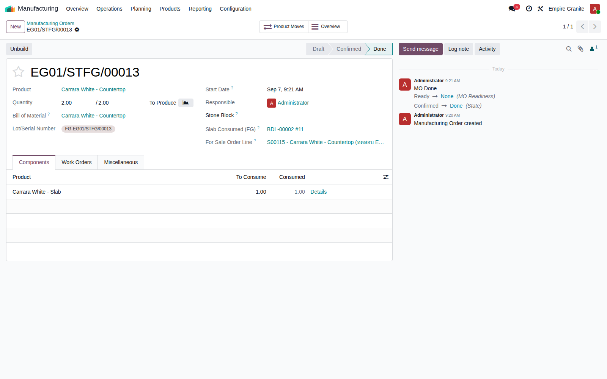
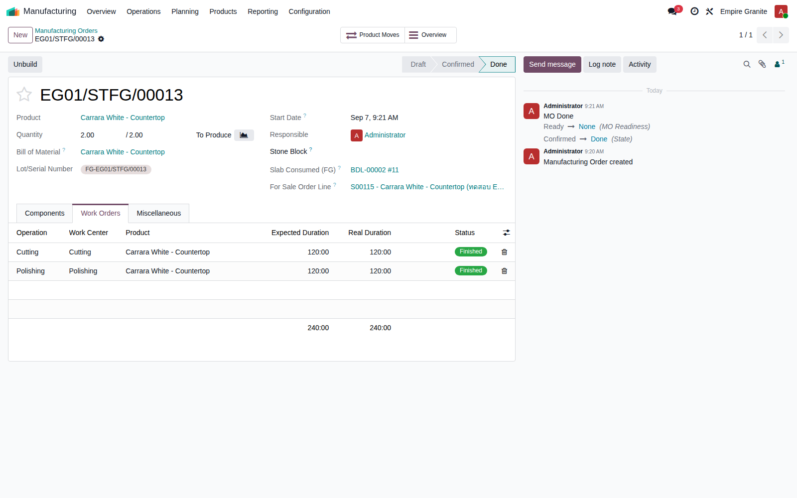

WO
Empire Granite · Stone Slab Inventory — Design Discussion
Work Order บน Odoo คืออะไร
กลไกการทำงาน และความสัมพันธ์กับต้นทุน
อธิบายจากศูนย์ ไม่ต้องมีพื้นฐาน Odoo มาก่อน — ใช้ของจริงในระบบ EMG-O เป็นตัวอย่างทุกจุด แล้วปิดท้ายด้วยทางเลือก 2 แบบที่ต้องตัดสินใจก่อนไป Visit โรงงาน 11 ก.ย.
EMG-O Design Discussion · Work Order Explainer
โครงสร้างพื้นฐาน
3 คำที่ต้องรู้จัก: ใบสั่งผลิต → งานตามคิว → สถานีงาน
Manufacturing Order (MO)
ใบสั่งผลิต 1 ใบ
เช่น "ผลิต Countertop 2 แผ่น จาก Slab นี้"
แตกเป็นงาน
ตามลำดับ →
★ หัวใจของวันนี้
Work Order
งานที่ต้องทำจริง เรียงคิว
เช่น "ตัด" แล้ว "ขัด"
แต่ละงาน
ทำที่ →
Work Center
สถานีงาน/เครื่องจักร
ตั้งไว้ล่วงหน้า ใช้ซ้ำได้ทุก MO
🍳
เทียบง่ายๆ กับครัวร้านอาหาร
MO = ใบสั่งอาหาร 1 จาน · Work Order = คิวงานเฉพาะจานนี้ที่ต้องผ่านแต่ละสถานี (หั่น → ผัด → จัดจาน) · Work Center = สถานีในครัวที่มีอยู่แล้ว (เขียง, เตา) ไม่ได้สร้างใหม่ทุกครั้งที่มีออเดอร์เข้า ใช้ซ้ำได้กับทุกจานที่ผ่านสถานีนั้น
จุดสำคัญ: Work Center ตั้งครั้งเดียว ใช้ซ้ำตลอด — ส่วนที่เปลี่ยนทุกครั้งคือ Work Order ซึ่งเกิดขึ้นอัตโนมัติตามลำดับขั้นตอนที่กำหนดไว้ล่วงหน้า (Routing) เมื่อมีการยืนยัน MO
ของจริงในระบบเรา — ขั้นที่ 1
Work Center ที่มีอยู่แล้วใน EMG-O วันนี้
3 สถานีงานที่ตั้งไว้แล้ว: Stone Cutting (ตัด Block→Slab), Cutting กับ Polishing (ตัดขนาด/ขัดเงา สำหรับ FG)
คอลัมน์ขวาคือ Cost per hour — ต้นทุนต่อชั่วโมงของสถานีนั้น ใช้เป็นตัวคูณกับเวลาทำงาน (ดูสไลด์ถัดไป) ตอนนี้ทุกสถานีตั้งไว้เท่ากันที่ 500 บาท/ชม.

🔍 คลิกดูขยาย
ของจริงในระบบเรา — ขั้นที่ 2
หน้าตาใบสั่งผลิต (MO) จริง
MO จริง EG01/STFG/00013 — ผลิต "Carrara White - Countertop" 2 แผ่น จาก Slab เดิม 1 ก้อน สถานะ Done
สังเกตแท็บ Components (วัตถุดิบที่ใช้) กับแท็บ Work Orders ที่อยู่ข้างกัน — นี่คือจุดที่ MO แตกออกเป็นงานตามคิว ดูสไลด์ถัดไป

🔍 คลิกดูขยาย
ของจริงในระบบเรา — ขั้นที่ 3
แท็บ Work Orders ของ MO เดียวกัน — ครบทั้ง 3 คำในภาพเดียว
MO นี้แตกเป็น 2 Work Order เรียงคิว: Cutting (ทำที่ Work Center "Cutting") แล้วต่อด้วย Polishing (ทำที่ Work Center "Polishing")
คอลัมน์ Expected Duration vs Real Duration คือหัวใจของกลไกต้นทุน — เอาไปคูณ Cost per hour ของ Work Center นั้นได้ต้นทุนแรงงาน (สไลด์ถัดไป)

🔍 คลิกดูขยาย
กลไกต้นทุน
สูตรเดียว: เวลาที่ใช้ ÷ 60 × ต้นทุน/ชม. ของสถานีนั้น
| Work Order | Work Center | Real Duration | Cost/ชม. | ต้นทุนแรงงาน |
|---|
| Cutting | Cutting | 120 นาที (2 ชม.) | 500 | 1,000 บาท |
| Polishing | Polishing | 120 นาที (2 ชม.) | 500 | 1,000 บาท |
| รวมต้นทุนแรงงานจาก Work Order ของ MO นี้ | 2,000 บาท |
ต้นทุนวัตถุดิบ
(จาก Components)+
ต้นทุนแรงงาน
(จาก Work Order)=
ต้นทุนรวมของ MO
นี่คือกลไกมาตรฐานของ Odoo Manufacturing ทุกโรงงานที่ใช้ระบบนี้ทำงานแบบนี้เหมือนกัน — คำถามคือ EMG-O พร้อมจะใช้ตัวเลข "Real Duration" ที่เป็นเวลาทำงานจริงหรือยัง (ดูสไลด์ถัดไป)
หมายเหตุสำคัญ — สถานะจริงของ EMG-O วันนี้
ตัวเลข 500 บาท/ชม. และ Real Duration ยังเป็นค่าตั้งต้น ไม่ใช่ของจริง
⚠
ตรวจสอบจากข้อมูลจริงในระบบ (30-08-2026)
ทุก Work Order ที่เคยเกิดขึ้นจริงในระบบ (16 รายการที่ตรวจสอบ) มีค่า Real Duration เท่ากับ Expected Duration เป๊ะทุกใบ และผู้บันทึกเวลาคือ "OdooBot" (ระบบเติมให้อัตโนมัติ) — แปลว่าโรงงานยังไม่เคยกดจับเวลาทำงานจริงแม้แต่ครั้งเดียว
ทางบัญชีของเราแก้ปัญหานี้ไว้แล้ว: ต้นทุนแรงงานที่บันทึกเข้าบัญชีจริงของ EMG-O ไม่ได้ใช้ตัวเลข Duration × Cost/ชม. นี้เลย — ใช้ "ค่ามาตรฐานคงที่ต่อหมวดสินค้า" ที่ตั้งไว้ล่วงหน้าแทน (ตั้งครั้งเดียว ไม่ต้องพึ่งการจับเวลาหน้างาน) เพื่อไม่ให้ตัวเลขที่ยังไม่น่าเชื่อถือหลุดเข้าไปในบัญชีจริง
คำถามที่ตามมา: เราจะปล่อยให้ Work Order เป็นแค่ "โครงกระดูก" พอให้ระบบเดินได้ต่อไป หรือจะลงทุนทำให้ตัวเลขเหล่านี้เป็นของจริง — นี่คือทางเลือก 2 แบบในสไลด์ถัดไป
ทางเลือก
2 แนวทางที่เป็นไปได้สำหรับ EMG-O
ทางเลือก A — Minimal (ของปัจจุบัน)
แค่พอสร้าง MO ได้ + track ต้นทุนได้
Work Center/Work Order มีแค่พอให้ระบบเดินตามลำดับขั้นตอนได้ ไม่ต้องจับเวลาจริงหน้างาน
- ต้นทุนแรงงาน = ค่ามาตรฐานต่อหมวดสินค้า (ตั้งครั้งเดียว)
- ไม่ต้องมีวินัยกดเริ่ม/จบงานหน้าเครื่อง
- ไม่ได้ใช้วางแผนกำลังผลิต/คิวงานจริง
ทางเลือก B — Full
เต็มรูปแบบตามมาตรฐาน Odoo Manufacturing
ตั้ง Routing ต่อสินค้า/หมวดจริง + ปฏิทินกะจริงต่อสถานี + พนักงานกดเริ่ม/จบงานจริงผ่านแอป Shop Floor
- ต้นทุนแรงงาน = เวลาจริง × Cost/ชม. (แม่นยำต่อ MO)
- ใช้ดู bottleneck/วางแผนคิวงานได้จริง
- ต้องมีวินัยหน้างานสม่ำเสมอ ไม่งั้นตัวเลขเพี้ยน
ทั้ง 2 แบบใช้โครงสร้าง Work Center/Work Order เดียวกัน — ต่างกันแค่ "ความละเอียดของข้อมูลที่ใส่เข้าไป" ไม่ใช่คนละระบบ อัพเกรดจาก A ไป B ได้ภายหลังโดยไม่ต้องรื้อของเดิม
นับจริงเป็นจุด — สำหรับตัดสินใจ
จำนวนจุดที่ต้องทำจริงบนระบบ: A vs B
A — Minimal
⚙️ ตั้งค่าระบบ (ทีมเรา ทำครั้งเดียว) — 3 จุด
- รายชื่อ Work Center ต่อสถานี (มีแล้ว)
- ลำดับ Operation ต่อหมวดสินค้า (เพิ่มเมื่อมีหมวด/ขั้นตอนใหม่)
- ค่ามาตรฐานต้นทุนแรงงานต่อหมวด (ตั้งไว้แล้ว)
🔁 งานหน้างานที่เพิ่มขึ้น — 0 ขั้นตอน
พนักงานทำงานเหมือนเดิมทุกอย่าง ไม่ต้องกดอะไรเพิ่ม
B — Full
⚙️ ตั้งค่าระบบ (ทีมเรา ทำครั้งเดียว) — 6 จุด
- ใส่ Capacity ต่อสถานี (efficiency/OEE/setup-cleanup)*
- ผูกปฏิทินกะทำงานจริงต่อสถานี*
- แยก Routing ละเอียดต่อสินค้าแต่ละหมวด*
- ติดตั้ง/ตั้งค่าแอป Shop Floor หน้างาน*
- สร้าง user login พนักงานหน้างานทุกคน*
- ปรับ Cost/ชม. ให้เป็นค่าจริงจากบัญชี*
🔁 งานหน้างานที่เพิ่มขึ้น — 2 ขั้นตอนบังคับ/Work Order
กด Start + กด Finish ทุกครั้งที่เริ่ม/จบงานแต่ละสถานี (บวก Pause เพิ่มถ้าหยุดงานกลางคัน)
* ทั้ง 6 จุดของ B ต้องรอข้อมูล/ความพร้อมจากฝั่งลูกค้าก่อนตั้งได้จริง (เวลาทำงานจริง, ปฏิทินกะ, รายชื่อพนักงาน, อุปกรณ์หน้างาน) — ต่างจาก A ที่ทีมเราตั้งเองได้เกือบทั้งหมด
คูณสเกลจริง: ผลิต 20 ชิ้น/วัน ผ่าน 3 สถานี = 60 Work Order/วัน × 2 ครั้ง = ~120 ครั้ง/วัน ที่ต้องมีคนกดปุ่มให้ครบทุกครั้ง — ผลกระทบต่อจังหวะงานหน้างานจริงเป็นสิ่งที่ต้องประเมินอย่างระมัดระวังก่อนเลือกแบบ B
เปรียบเทียบ
A (Minimal) vs B (Full) — ต่างกันตรงไหนบ้าง
| หัวข้อ | A — Minimal (ปัจจุบัน) | B — Full |
|---|
| งานตั้งค่าตอนเริ่ม | น้อย — ตั้ง Work Center + ลำดับ operation ครั้งเดียว | มาก — เพิ่ม capacity, ปฏิทินกะ, routing ละเอียดต่อสินค้า |
| วินัยหน้างานที่ต้องมี | ไม่ต้องมี | ต้องกดเริ่ม/จบงานทุกครั้ง ทุกสถานี |
| ความแม่นยำต้นทุนแรงงาน | ปานกลาง (ค่าเฉลี่ยมาตรฐานต่อหมวด) | สูง (อิงเวลาจริงต่อ MO) |
| วางแผนกำลังผลิต/หา bottleneck | ทำไม่ได้จริง | ทำได้จริง |
| เหมาะกับ | ธุรกิจที่เน้นความง่าย ค่าแรงประมาณการก็พอ | โรงงานที่พร้อมเก็บข้อมูลสม่ำเสมอ ต้องการตัวเลขแม่น |
สรุป
เลือกทางไหนก็ได้ — แต่ต้องประเมินอย่างระมัดระวังก่อน
!
ข้อควรระวังก่อนตัดสินใจ
ทางเลือกระหว่าง A กับ B ต้องประเมินผลกระทบต่อการทำงานหน้างานปัจจุบัน (ดูสไลด์ก่อนหน้า) และข้อมูลที่เราต้องการจะเก็บเพิ่มจากโรงงาน อย่างระมัดระวัง ก่อนสรุปทิศทาง
ไม่ว่าจะเลือกทางไหน — โครงสร้าง Work Center 3 ตัวที่มีอยู่วันนี้ใช้ต่อยอดได้ทันที ไม่ต้องเริ่มจากศูนย์ ข้อมูลจาก Visit หน้างานวันที่ 11 (checklist หัวข้อ 7 ที่เตรียมไว้แล้ว) จะเป็นฐานสำหรับการประเมินนี้
ภาคผนวก
หลักฐานจากโค้ดจริง
สำหรับทีม
อ้างอิงตรงจากไฟล์จริงในโมดูล stone_slab_inventory (EE branch) — ไม่จำเป็นต้องนำเสนอในรอบปกติ
อ้างอิงไฟล์จริง
แต่ละจุดที่พูดถึง เห็นได้จากไฟล์เหล่านี้
| เรื่อง | ไฟล์ | สิ่งที่เกิดขึ้นจริงในโค้ด |
|---|
| Work Center ตั้งครั้งเดียว ใช้ซ้ำ |
res_company.py |
_ensure_stone_workcenter(name) — find-or-create ต่อบริษัท ใช้ร่วมกันทุก FG category (ADR-029), ไม่ผูก category |
| ลำดับ operation ต่อหมวดสินค้า |
stone_fg_category_operation.py |
1 record = 1 ลำดับ operation ของ 1 product category, resolve ชื่อไปหา Work Center ที่มีชื่อตรงกันตอน runtime |
| ต้นทุนแรงงานจาก Duration × Cost/ชม. ถูก strip ออกจากบัญชีจริง |
mrp_production.py |
_cal_price() override — ตัดค่า workcenter/labor placeholder ออกจากมูลค่าที่ post ลง GL เหลือแค่ material cost เท่านั้น (ADR-046/049) |
| Real Duration ไม่เคยเป็นค่าจริง |
mrp_production.py (docstring) |
ระบุตรงๆ: "all 16 existing workorder time_ids records were system-generated exact matches to duration_expected, attributed to OdooBot not a real staff member" |
| ต้นทุนแรงงานจริงที่ post เข้าบัญชี |
mrp_production.py |
_tag_stone_fg_labor_cost() / _tag_stone_cutting_labor_cost() — ค่ามาตรฐานคงที่ต่อหมวด ไม่อ่านค่าจาก Work Order เลย |